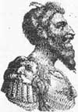

Attila (406-453) Roma İmparatorluğu’na büyük korku vermiş olan bir kraldır. Öyle ki Romalılar onu Flagellum Dei (Tanrının Kırbacı) lakabıyla anmışlardır. Atlıları Orta Asya ve Avrupa’nın dört bir yanına dağılmış ve ancak Fransa’yı işgal etmeye yöneldiklerinde durdurulabilmişlerdir.

Attila, zayıflamaya başladığı 4. ve 5. yy’larda Roma İmparatorluğu’na saldıran birkaç kabile şefinden biriydi. 476 yılında, Attila’nın ölümünden sadece birkaç on yıl sonra Batı Roma İmparatorluğu çökecek, Doğu Roma İmparatorluğu ise daha uzun ömürlü olacak ve sonraki bin yılda da varlığını sürdürecekti.
Attila ve kardeşi Bleda, Orta Avrupa’da doğdular. Hun Krallığı’nı amcalarından 434 yılında devraldılar. Attila 445 yılında Bleda’yı öldürene dek kardeşler krallığı ortaklaşa yönettiler. Attila’nın başkenti büyük ihtimalle bugün Romanya’nın olduğu bölgedeydi.
Attila’nın başa geçtiği dönemde Hun İmparatorluğu, Hazar Denizi’nden Baltık Denizi’ne kadar çok geniş bir coğrafyaya yayılmıştı. Attila, Doğu Roma’dan oldukça yüksek miktarda haraç alıyordu. Romalıların ödeme yapmayı durdurması üzerine aralarında Belgrad ve Sofya’nın da bulunduğu birçok şehri yağmaladı.
451 yılında batıya ilerlemeye başladı. Batı Roma İmparatorluğu’nun Galya eyaletini istila etti. Katalan Düzlükleri’ndeki savaşta Romalılar’la karşı karşıya geldi. Bu, onun ilk ve tek yenilgisi olacaktı. Daha sonra ordusu İtalya’yı işgal etti. Aralarında Milan, Verona ve Padua’nın da bulunduğu şehirleri yağmaladı.
Attila 453 yılında evlendi ve bir efsaneye göre sonraki gece öldü. Söylendiğine göre ölüm nedeni burun kanamasıydı. Liderliğinden yoksun kalan Hun İmparatorluğu kısa süre sonra çöktü.
Ek Bilgiler
1- Attila, barış karşılığında Doğu Roma İmparatorluğu’ndan her yıl 952 kg ağırlığında altın istemişti.
2- Attila’nın mezarını kazan ve defin işlemini gerçekleştiren işçilerin mezarın yerini açıklamamaları için öldürüldüğü söylenmektedir.
3- I. Dünya Savaşı sırasında Müttefikler, propaganda amacıyla Almanları zaman zaman Hunlar olarak tanımlamıştır. Buna karşılık modern Almanya ile Hunlar arasında hiçbir tarihi bağlantı bulunmamaktadır.